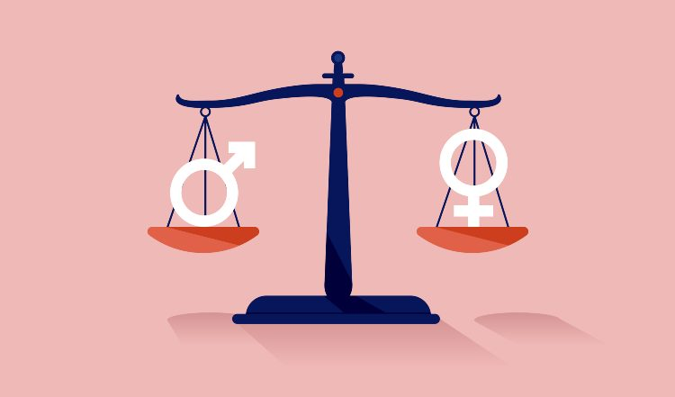

Cuando se habla de discriminación, se hace alusión a una conducta social llevada a cabo por individuos, instituciones, organizaciones o cualquier social, que produce y reproduce por acción u omisión ciertas desigualdades de tipo económico, social, laboral, afectivo o político, en de un cierto tipo de individuos, grupos humanos o instituciones. Es decir, que la discriminación consiste en negarle a un individuo o grupo humano el acceso a ciertos derechos, bienes o servicios, sin tener una razón justa para ello. Es un fenómeno social que causa mucho malestar en quien lo padece y que empobrece el trato entre los seres humanos, haciéndolo menos igualitario, menos democrático y por ende menos justo. discriminación suele ir de la mano de la ignorancia, el prejuicio y otras razones subjetivas para preferir injustamente a un sujeto o grupo humano antes que a otros. Desde luego, no ocurre así cuando se tienen motivos concretos, individuales, para rechazar a un individuo, sin por ello generalizar hacia todos lo que tengan su misma condición social. En el mundo existen numerosas tradiciones, leyes, ideas, políticas y prácticas discriminatorias, pero también muchas instituciones que luchan en su contra en diversos países. La discriminación va en contra de la riqueza propia de una humanidad plural y diversa, que acepte sus diferencias en paz.

Las causas de la discriminación no son fáciles de precisar. Muchas pueden ser heredadas de generaciones previas, inscritas en la cultura local como algún tipo de enemistad ancestral o de rechazo histórico. En otros casos radican en experiencias personales negativas, que en lugar de resolverse permanecen y se transmiten bajo la forma del prejuicio. Sea como sea, la generalización de una mala experiencia, o el prejuicio gratuito hacia los demás son poco más que formas agresivas de la ignorancia, pues en vez de permitirse conocer al otro y aprender de él, se lo rechaza de antemano.
Las consecuencias más obvias de la discriminación son el dolor, la molestia, la rabia, de parte de la persona que padece la injusticia. Eso puede no parecer mucho, pero a la larga, las actitudes discriminatorias engendran su contrapartida, devolviéndose como un búmeran contra quien la ejerce. En algunos casos, las personas discriminadas tienden a resentirse y recordar quiénes las discriminaron, pudiendo a su vez pasar luego al rol de discriminador en venganza, perpetuando así el ciclo nocivo de la discriminación.
Ejemplos de discriminación abundan, por desgracia. Una mujer que está recibiendo un salario inferior al de su compañero de trabajo por realizar el mismo idéntico salario, está siendo discriminada. Lo mismo un extranjero al que le niegan un cargo para el que está preparado, para dárselo a un local que no tiene las mismas competencias. También está siendo discriminada una persona de una etnia determinada a la que se le niega el ingreso a un bar o una discoteca por ser diferente, o una pareja homosexual a la que se le pide que se retiren de un establecimiento simplemente por su preferencia sexual, como si fueran clientes de segunda mano. Todo ello son formas de agresión injusta, que sirven de ejemplo de discriminación, y que ocurren a diario en muchos países.